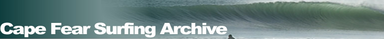
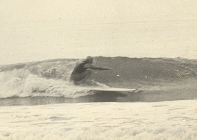

The first link goes Home . The second link is Research . The third link is Services . The fourth link is Collections . The fifth link is About . The sixth and last link is Ask a Librarian!

Joseph "Skipper" Funderburg
| Joe Funderburg began surfing in Wrightsville Beach around 1963, and was one of the first cadre of individuals to start surfing in southeastern North Carolina. A longtime waterman, Funderburg continues to surf when not boating, fishing, or exploring the history of all things aquatic. You may also want to check out Funderburg's book, Surfing on the Cape Fear Coast, the first book to examine the history of surfing in southeastern North Carolina. |

Funderburg at the South Atlantic Surfing Championships, November 1966. Carolina Beach, NC. Courtesy: Joe Funderburg |
Also of note: Surfing Is - an essay written by Joe Funderburg for an English class assignment while he was in high school. Dated February 6, 1966, his words reflect not only his own thoughts about surfing at the time but also the relationship between man and the sea.
|
Page created and maintained by:Peter Fritzler, Randall Library, University of North Carolina Wilmington
First online: June 4, 2004
Updated: August 8, 2008; December 17, 2010; November 5, 2014
Citing This Page:
"Joseph "Skipper" Funderburg." Cape Fear Surfing Archive. William Randall Library, University of North Carolina Wilmington. [Created: June 4, 2004; Updated: November 5, 2014; Cited: ]. Available from http://library.uncw.edu/surf/people/funderburgj.